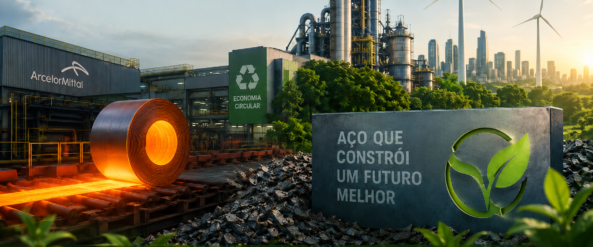
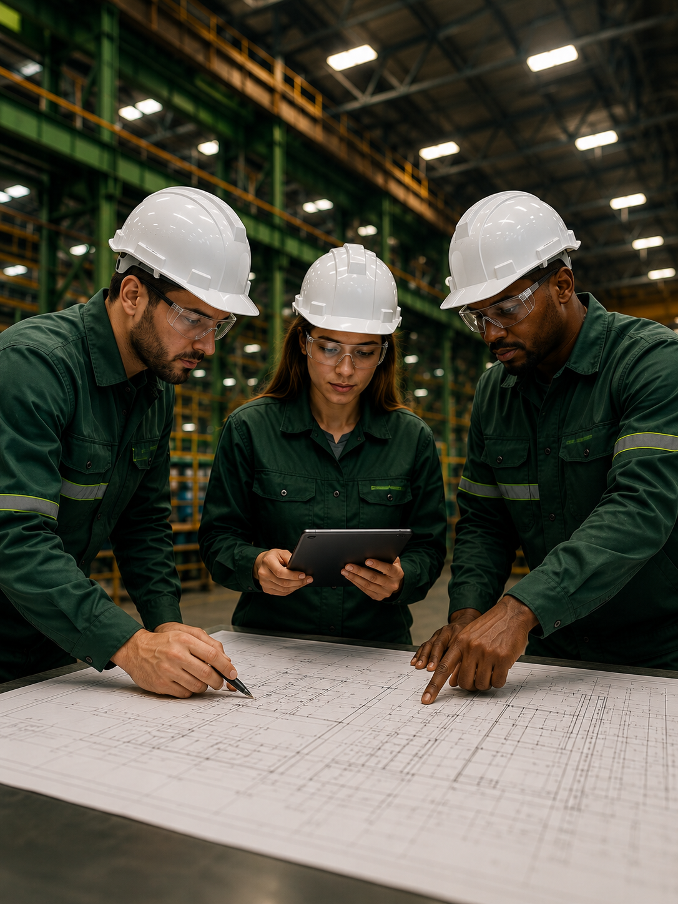
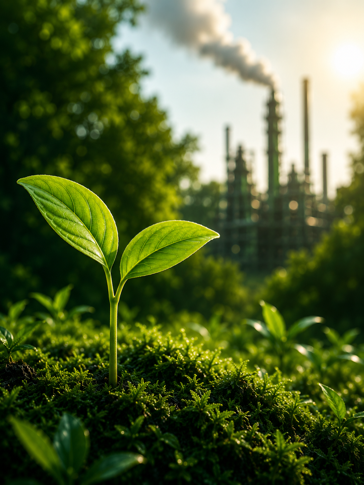
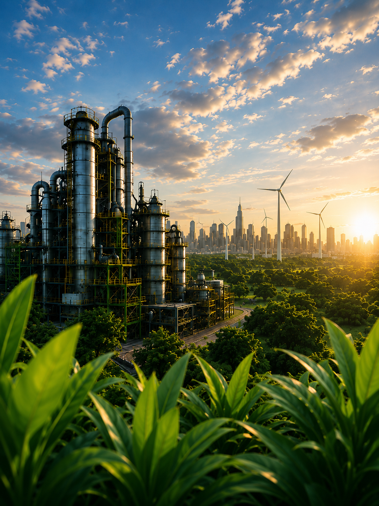
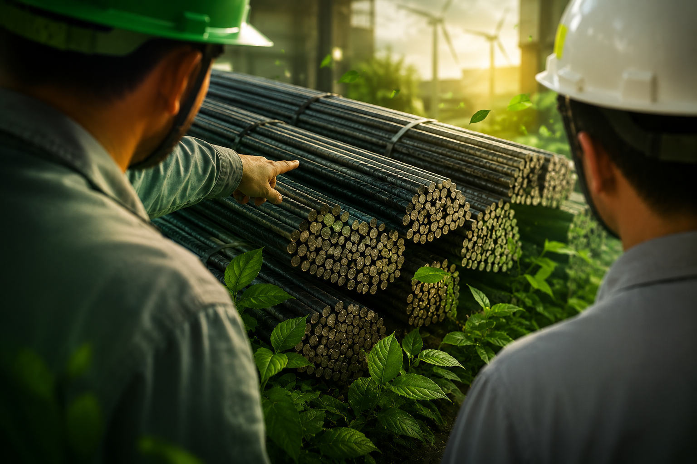

Sustentabilidade
Produzir aço de forma responsável, reduzindo impactos ambientais e preservando recursos naturais.
Inovação
Buscar constantemente novas tecnologias para tornar a produção de aço mais eficiente e sustentável.
Economia Circular
Incentivar a reciclagem e o reaproveitamento de materiais para diminuir desperdícios.
Quer descobrir uma curiosidade?

Aço Sustentável
O aço sustentável representa o futuro da indústria. Produzido com tecnologias mais limpas, ele busca reduzir a emissão de gases poluentes, economizar recursos naturais e incentivar a reciclagem de materiais. Como o aço pode ser reciclado diversas vezes sem perder sua qualidade, ele se torna um dos materiais mais importantes para a construção de uma economia circular. Além disso, o investimento em energias renováveis e em soluções inovadoras, como o hidrogênio verde, permite que a produção de aço seja cada vez mais eficiente e responsável com o meio ambiente. Dessa forma, é possível unir desenvolvimento industrial, inovação e preservação ambiental para construir um futuro mais sustentável.
Quiz: Aço Sustentável
O aço pode ser reciclado sem perder sua qualidade?
Compromisso com um Futuro Sustentável
Trabalhamos para produzir aço de forma responsável, investindo em inovação, reciclagem e eficiência energética. Nosso objetivo é contribuir para o desenvolvimento sustentável, preservando recursos e gerando valor para as futuras gerações.
95%
Materiais reciclados
80%
Água reutilizada
50%
Redução de emissões
100%
Compromisso ambiental
Entre em Contato
Tem dúvidas, sugestões ou deseja saber mais sobre nossas soluções em aço sustentável? Nossa equipe está pronta para ajudar.